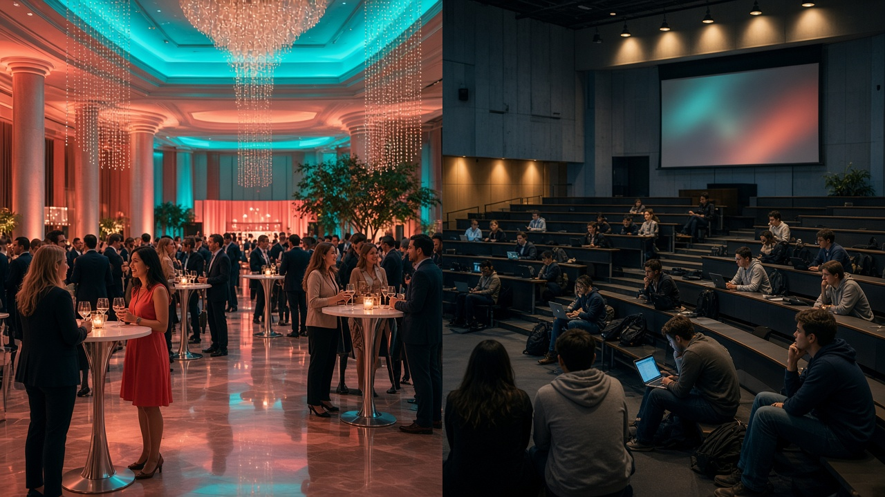

Блог · Eventerra
Практика, учёба и event в Минске
Статьи для студентов маркетинга, PR и менеджмента: вузы, поступление, сессии, стажировка на площадке и отчёт под методичку вуза.

Как написать диплом студенту маркетинга, PR и event: дисциплины, сложность и особенности
По каким специальностям пишут, где сложно, как собрать кейс с площадки и когда письменная часть требует отдельного контура.

Куда идут студенты маркетинга и PR в Беларуси: вузы, колледжи и что ждать на практике
Вузы, колледжи и реальность практики: куда ведут маркетинговые и PR-треки в Беларуси и как выглядит стажировка в event.

Как тяжело поступить на рекламу, менеджмент и коммуникации в РБ: ЦТ/ЦЭ и конкурс
ЦТ/ЦЭ, конкурс и проходные без паники: как читать поступление на рекламу и коммуникации и что важно после зачисления.

Почему в вузе РБ тяжело учиться на гуманитарных: курсовые, сессии и ритм
Курсовые, сессии и календарь: практический чек-лист, почему на гуманитарных в РБ тяжело — и как не сгореть.

Практика в event-агентстве vs «отсидеться на кафедре»
Спокойная кафедра или живая площадка: честное сравнение форматов практики и production-чек-лист ивента.

Стажировка во время учёбы в Минске: как стыковать пары и площадку
Пары днём, площадка вечером: реалистичная модель недели стажёра event в Минске без выгорания.
Отчёт по практике и диплом на кейсе ивента: под методичку вуза РБ
Методичка задаёт форму, ивент — содержание: как собрать отчёт и диплом на живом кейсе площадки.

Первый vs третий курс: когда идти в event-агентство
Ранний вход или третий курс: когда практика в агентстве даёт максимум — и когда лучше подождать.
5 навыков с мероприятия, которые помогают на сессии и защите
От регистрации гостей до защиты курсовой: какие навыки с площадки реально помогают в учёбе.

Как агентству брать студентов БГУ, БГЭУ и БГУИР без хаоса
Воронка, онбординг и лимиты: как брать студентов БГУ/БГЭУ/БГУИР так, чтобы площадка не стала экскурсией.

Тяжёлая учёба и корпоратив глазами стажёра
Утром экзамен, вечером call time: честный разбор корпоратива глазами стажёра Eventerra.